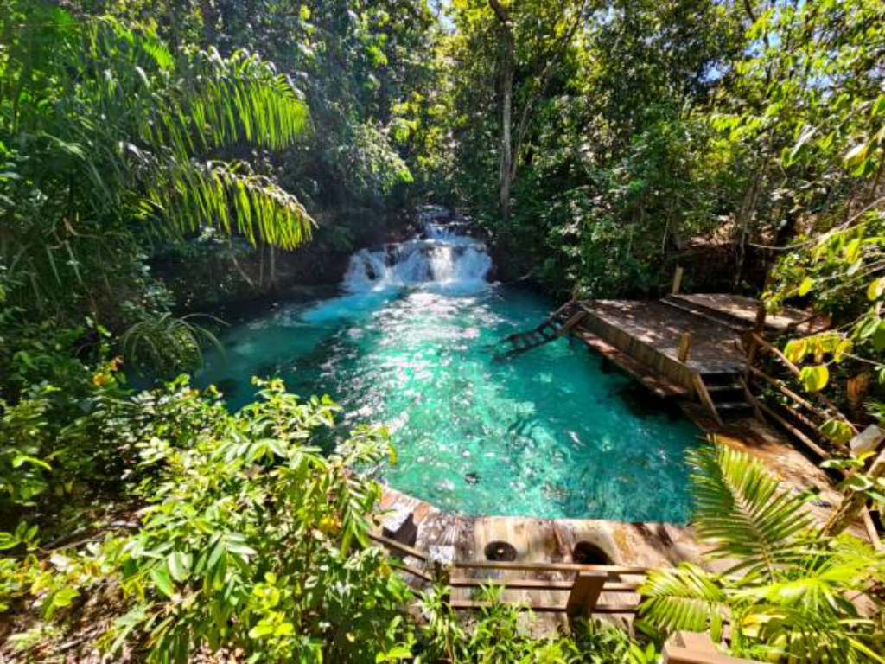

Tocantins é o estado mais novo do Brasil, criado em 1988, e possui como capital Palmas. Conhecido pelas belas paisagens do Jalapão, o estado tem economia baseada na agropecuária e agricultura, além de uma cultura influenciada por tradições sertanejas, indígenas e nordestinas.

Voltar